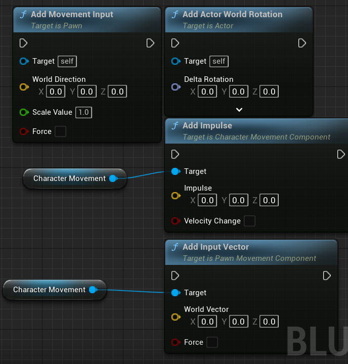

Lyra中的Distance Matching
一、前言
关于游戏的角色位移与角色动画中一直有一个值得争议的问题，那就是应该让代码/运动学驱动位移还是动画数据驱动位移。
代码/运动学驱动就是我们常见到的通过赋予一个角色速度、加速度、冲量，来增量地作用于角色的transform。 
而动画数据驱动则是通过读取动画片段中存储的根骨骼偏移量，随着时间而对应地赋予角色transform以增量。
单独使用它们都会有各自的问题，代码/运动学驱动会使移动更有规律更符合玩家预期，但是往往代码驱动的位移与动画中表现的位移量会有偏差，导致滑步等现象。而动画数据驱动的位移质量取决于动画的数量，如果动画数量过少会导致在过渡区由于没有合适的动画，无法产生符合玩家直觉的位移量，从而导致玩家感觉角色“笨拙”、“不好操作”。
二、Motion Matching
目前动画数据驱动这个方向的极致方案是Motion Matching(Code-Driven同样可以使用！），通过对一个庞大的姿势库进行采样和特征提取，在运行时匹配特征最相近的姿势进行播放。 尽管在很多3A级端游中，Motion Matching已经斩获了亮眼的表现。但是对于手机游戏而言，想要将一个庞大的姿势库加载在内存中将是一个巨大的挑战，同时姿势匹配的运算量恐怕对于手机来说也是一个难题，目前还没有已上线的手机游戏采用了这项技术。
Motion Matching的一些细节可以参考下文。
三、Distance Matching
不过今天要讲的不是Motion Matching，而是与之有些相似的Distance Matching技术。
我们以数据的眼光来审视一个动画资源文件，一个动画是由数个帧组成的，而每个帧对应地存储了所有骨骼点相对于根节点的相对坐标，那么给定一个方向，我们可以得出每一帧在这个方向上的偏移量，累加后即为从开始时刻到当前时刻的总位移量。
坠落动画

在Unreal的官方文档中，给出了一个落地动画播放的示例。 Distance Matching流程：
- 离线：首先对动画资源进行采样，将累计根位移量保存至曲线上。(采样的详细流程见官方文档)
- 获取当前距地面距离，在曲线上查找对应姿势
- 直接输出对应姿势，而不是随着时间逐帧过渡姿势
这样做有什么好处？
- 只需要一个动画文件即可完成以往需要通过两个动画状态Falling Loop、Falling Landing才能完成的过渡。
- 动画可以更好地匹配非匀速的坠落速度而不需要让动画师来花费更多工作来调整
停步动画
除了官方的例子之外，我再额外选取Lyra项目中的停步动画来展示其应用。 正如我们在前面说到的，Distance Matching通过用一个距离变量来查找动画资源上对应的姿势，在停步动画这个应用中，我们所使用的这个“距离”就是“角色距离完全停止位置的距离”，在Lyra项目中，是通过与角色运动组件相关的库函数UAnimCharacterMovementLibrary::PredictGroundMovementStopLocation来根据当前的各项变量（速度、加速度、摩擦力等）来预测距离完全停止的距离。
而对应地，动画资源中也采样出每个采样帧距离完全停止姿态帧的距离并保存为曲线。
而在动画蓝图中，一旦进入停步状态后，就会持续更新这个预测距离，并选取曲线值对应的停步姿势，来达到动画位置与运动学位置完全匹配的效果。
从另一个角度来看，这是对Motion Matching的一种彻底Code-Driven的简化实现，只考虑了Distance这一个特征。
 这样粗暴的姿势选取会存在一个问题，那就是如果预测距离变化较为频繁时(例如玩家短促地连敲输入键，可能会对角色的加速度造成较大影响），会出现姿势瞬时变化过大的情况，也就是我们常说的“人物抽搐”。一个比较好的解决方案就是对预测结果和上一帧的预测结果做缓冲或者插值。此外Unreal官方还提供了一些通过有限调整播放速度来“趋向”匹配姿势的功能节点，避免直接选择姿势的生硬切换。
这样粗暴的姿势选取会存在一个问题，那就是如果预测距离变化较为频繁时(例如玩家短促地连敲输入键，可能会对角色的加速度造成较大影响），会出现姿势瞬时变化过大的情况，也就是我们常说的“人物抽搐”。一个比较好的解决方案就是对预测结果和上一帧的预测结果做缓冲或者插值。此外Unreal官方还提供了一些通过有限调整播放速度来“趋向”匹配姿势的功能节点，避免直接选择姿势的生硬切换。